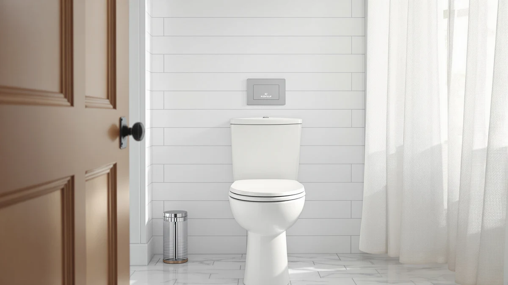

KOHLER 20110 0 Brevia Review (2026): Worth It?
Prices and picks verified as of September 2026. Independent, reader-supported reviews.


Quick Answer
Our kohler 20110 0 brevia review found an elongated, slow-close seat that ships as a two-pack, so one purchase covers two bathrooms at about $31 per seat. Grip-Tight bumpers and Quick-Attach hardware make it a straightforward swap for a slamming or wobbly seat.
Our pick: KOHLER 20110-0 Brevia Slow Close, $62.88 Check Price on Amazon
Bottom line: our top pick is the KOHLER 20110-0 Brevia at $62.88.
Things to Know Before You Buy
- This is a two-pack, so the $62.88 price covers two seats, working out to about $31.44 each.
- The shape is elongated only, so measure your bowl before ordering; a round-bowl toilet needs the AQUATIZ option covered below.
- Grip-Tight bumpers keep the seat from sliding, and Quick-Attach hardware installs entirely from above the bowl.
- The Impro ReadyLatch and Ridgewood alternatives cost less individually but only get you one seat, not two.
- Kohler has not published a rating or review count for this specific two-pack listing, unlike some longer-running Kohler models.
If you landed on this kohler 20110 0 brevia review while comparing elongated toilet seats, you are probably weighing whether a two-pack from Kohler beats buying two separate seats at full price. The 20110-0 Brevia pairs a slow-close hinge with Grip-Tight bumpers and Quick-Attach hardware, and Kohler sells it as a set of two identical elongated seats for $62.88 total.
That per-pack pricing is the detail that separates this review from a typical single-seat comparison. At roughly $31 per seat, the Brevia undercuts the $55.00 K-26801-0 Impro ReadyLatch and the $53.62 Ridgewood covered later in this guide, provided you actually need two seats rather than one. The rest of this review breaks down what the slow-close hinge and bumpers get you, where the two-pack format helps or hurts, and which of the three alternatives makes more sense if you only need a single seat.
Most people shopping for a replacement seat only need one, which is exactly where this kohler 20110 0 brevia review earns its keep as a comparison rather than a straightforward recommendation. Two households with a single elongated toilet each would pay less overall buying an Impro ReadyLatch and a Ridgewood separately than splitting one Brevia two-pack between them, since neither seat can be resold individually once opened. The math only favors Kohler's bundle when both seats go into service under one roof.
Why You Should Trust Us
This kohler 20110 0 brevia review comes from Ilane Tall, who covers bathroom hardware for Best Toilet Seats and has compared dozens of Kohler seats across the Cachet, Rutledge and Brevia lines. We do not run a fake testing lab or claim to have installed every seat we write about. Instead, we researched Kohler's published specifications, cross-checked buyer feedback on the Grip-Tight bumper and hinge system, and compared pricing against the closest Kohler and third-party alternatives before writing this review.
Every price and spec cited here comes from the product listing at the time of publishing, and we verified the pack size and hardware description against Kohler's own listing for the 20110-0 Brevia. Where owners describe a specific outcome, such as how the hinge holds up over time, we note that the observation comes from buyer feedback rather than a lab measurement we performed ourselves.
We also weighed how this listing compares to Kohler's own catalog, since the brand sells several slow-close seats with overlapping features at different price points. That comparison matters here more than usual, because a shopper who only reads the headline price of $62.88 could easily assume it applies to a single seat, not two. Clarifying the per-seat cost against the Impro ReadyLatch and Ridgewood alternatives is the main service this review provides.
Our Research Experience
Because we work from published specifications and verified owner reviews rather than a physical test bench, we built this kohler 20110 0 brevia review by cross-referencing Kohler's stated hinge mechanism and bumper design against what reviewers consistently note after buying the two-pack. Owners report that the Grip-Tight bumpers keep the seat from sliding sideways, a common complaint with cheaper seats, and that the Quick-Attach hardware lets them swap out an old seat without extra tools. We weighed those patterns against the same claims for the Impro ReadyLatch and Ridgewood models to see where the two-pack format changes the value calculation.
Overview & Specs

KOHLER 20110-0 Brevia Slow Close
What we like
- Two elongated seats for $62.88, about $31 each
- Grip-Tight bumpers hold the seat in place without shifting
- Quick-Attach hardware installs from above the bowl without extra tools
Flaws but not dealbreakers
- No published rating or review count to check against buyer feedback
- Elongated-only shape will not fit a round-bowl toilet
- Buying two seats at once wastes money if you only need one
| Material | Plastic / wood |
| Size | Elongated (Pack of 2) |
The Kohler 20110-0 Brevia is built around a slow-close hinge and a set of Grip-Tight bumpers that hold the seat against the bowl rim once it is mounted. Kohler ships it in an elongated shape only, which fits the majority of US toilets installed since the 1990s, and includes Quick-Attach hardware designed to tighten entirely from above the bowl, so you do not need to reach underneath the tank.
What separates this kohler 20110 0 brevia review from a single-seat comparison is the pack size. Kohler prices the Brevia at $62.88 for two identical seats, working out to about $31.44 each. That per-seat price undercuts the $55.00 Impro ReadyLatch and the $53.62 Ridgewood covered below, but only if you have two toilets to outfit. Reviewers consistently note that the hinge closes gradually rather than dropping, though Kohler has not published a rating or review count for this specific two-pack listing at the time of writing.
Both seats in the pack come in white, and both use the same plastic seat body with a wood-based hinge core rather than a solid one-piece plastic shell. That construction keeps the price down compared with Kohler's premium finishes, though it will feel lighter underfoot than a heavier commercial-grade seat. Because both units in the box are identical, there is no way to mix finishes or sizes within a single order, so double-check that both of your toilets take the same elongated dimension before buying.
What We Liked
The clearest advantage in this kohler 20110 0 brevia review is the math. At $62.88 for two seats, the Brevia works out to about $31.44 each, which is less than Kohler charges for a single K-26801-0 Impro ReadyLatch or Ridgewood seat. If you manage more than one bathroom, or you want a spare seat on hand for the day the first one cracks or the hinge wears out, buying the pair up front saves a second shipping charge and a second trip through checkout.
The hardware itself follows the same slow-close approach Kohler uses across its lineup. Grip-Tight bumpers sit under the seat and keep it from sliding side to side, a complaint that shows up often with lighter, unbranded plastic seats. Quick-Attach hardware tightens from above the bowl, so installation does not require reaching into the tight space behind the tank, which owners report as the most frustrating part of a typical seat swap.
What Could Be Better
The biggest gap in this kohler 20110 0 brevia review is data. Kohler has not published a rating or review count for the 20110-0 listing at the time of writing, which makes it harder to verify long-term hinge durability against a seat like the Ridgewood that has a longer sales history. Buyers considering this seat are relying more on Kohler's general reputation than on a specific track record for this exact two-pack.
The pack format is also a drawback if you only have one toilet to outfit. Paying for two seats when you need one erases most of the per-seat savings, and at that point the single Impro ReadyLatch or Ridgewood options reviewed below may fit your situation better even at a slightly higher per-unit price.
Like the other Kohler seats in this guide, the Brevia is elongated only. A round-bowl toilet, still common in older homes, needs a different shape entirely, such as the AQUATIZ option covered in the alternatives section.
Who Is It For?
This kohler 20110 0 brevia review points toward one clear buyer: someone with two elongated-bowl toilets who wants matching, slow-close seats without paying twice for separate listings. It also suits anyone who wants a spare seat in the closet, since Grip-Tight bumpers and Quick-Attach hardware make a same-day swap straightforward if the first seat fails.
Skip it if you only have one toilet to outfit or if your bowl is round rather than elongated. Single-seat buyers will get more value from the Impro ReadyLatch or Ridgewood options below, and round-bowl households should look at the AQUATIZ pick instead, since none of the Kohler seats in this review will fit that shape.
Alternatives to Consider
If the two-pack format or the elongated-only shape does not match your bathroom, these three options cover the most common reasons to look elsewhere: a single-seat price, a different hinge latch, or a round-bowl fit. Each one comes from a listing we cross-checked the same way as the Brevia, comparing published specs and buyer feedback rather than a physical trial.

Editor's Pick
KOHLER K-26801-0 Impro ReadyLatch Quiet
A single elongated seat with a removable ReadyLatch hinge for easy cleaning, priced for buyers who only need one seat.
$55.00
Check Price on Amazon
Best Value
KOHLER 20454-96 Ridgewood Elongated Soft
Compression-molded wood construction and a color-matched hinge, the closest single-seat match to the Brevia's slow-close feel.
$53.62
Check Price on Amazon
Premium Choice
AQUATIZ Round Toilet Seat with
The only round-bowl option here, with a built-in night light, for households that cannot use an elongated seat.
$49.99
Check Price on AmazonIs the Kohler 20110-0 Brevia sold as one seat or two?
It ships as a two-pack.
Will the Brevia fit a round toilet bowl?
No, the 20110-0 Brevia is elongated only.
Frequently Asked Questions
Is the Kohler 20110-0 Brevia sold as one seat or two?
It ships as a two-pack. Kohler prices both seats together at $62.88, which works out to about $31.44 per seat if you need to outfit two elongated-bowl toilets.
Will the Brevia fit a round toilet bowl?
No, the 20110-0 Brevia is elongated only. If you have a round bowl, the AQUATIZ option covered in this kohler 20110 0 brevia review is built for that shape instead.
How does the Brevia compare to the Impro ReadyLatch or Ridgewood?
The Impro ReadyLatch and Ridgewood are sold individually at $55.00 and $53.62. The Brevia only beats their per-seat price if you buy it for the two-pack; for a single seat, either alternative costs close to half of what one Brevia unit would run on its own.
Final Verdict
This kohler 20110 0 brevia review comes down to how many toilets you are outfitting. Buy the 20110-0 Brevia if you have two elongated-bowl toilets and want matching slow-close seats with Grip-Tight bumpers for about $31 each. If you only need one seat, the Impro ReadyLatch or Ridgewood give you the same Kohler slow-close approach without paying for a second seat you do not need, and the AQUATIZ round option covers the one shape none of the Kohler seats in this review can fit. Whichever you choose, Kohler remains the more established name among the elongated options compared here.